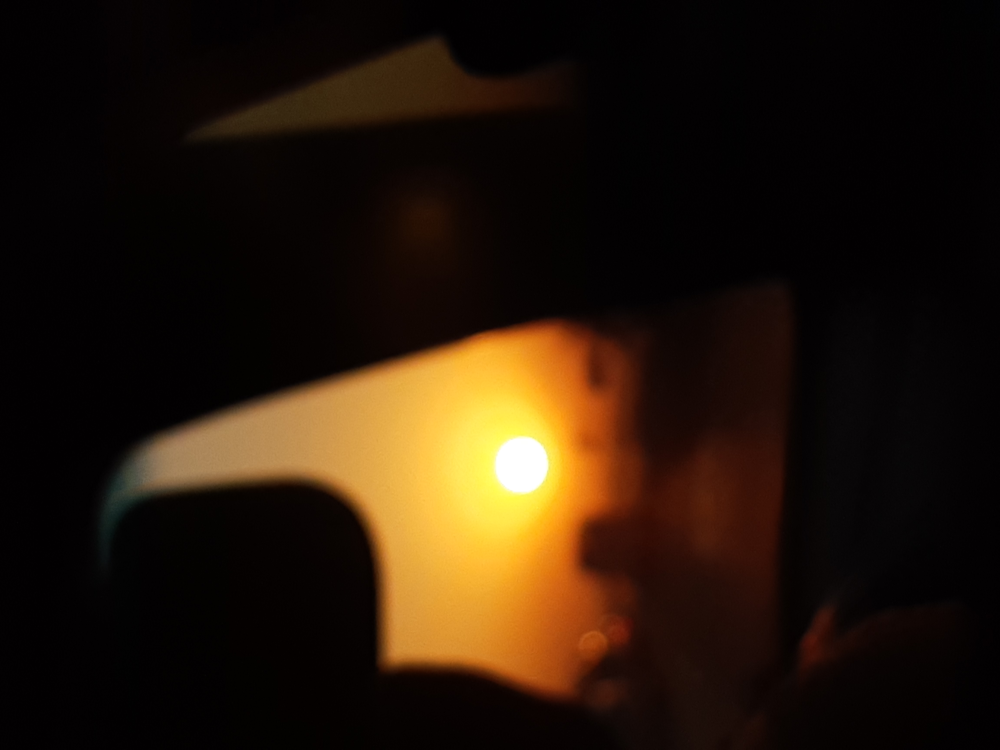
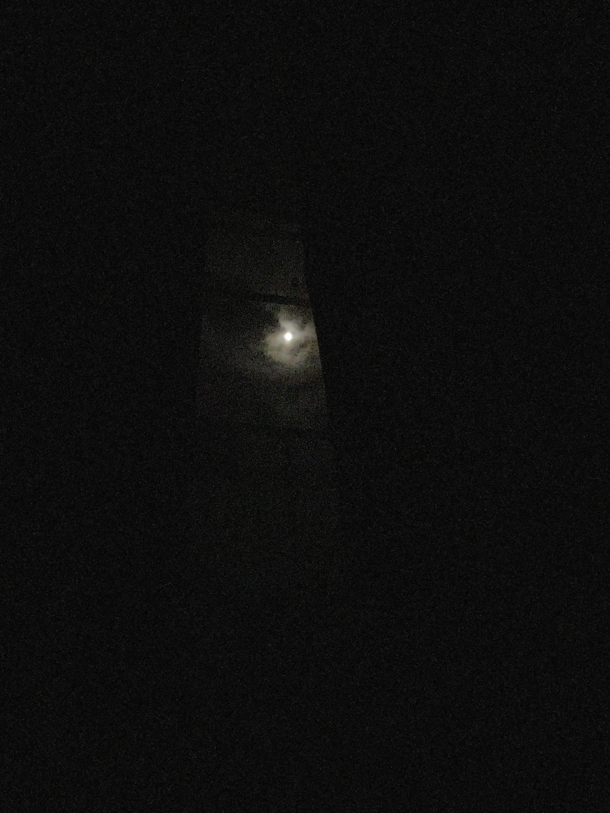
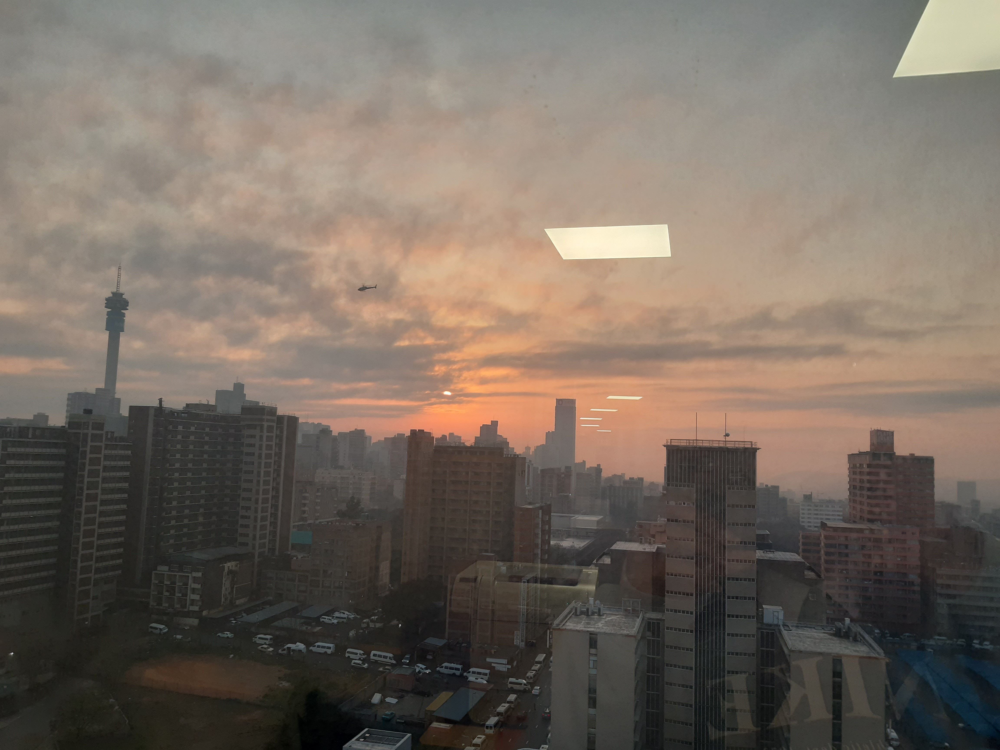
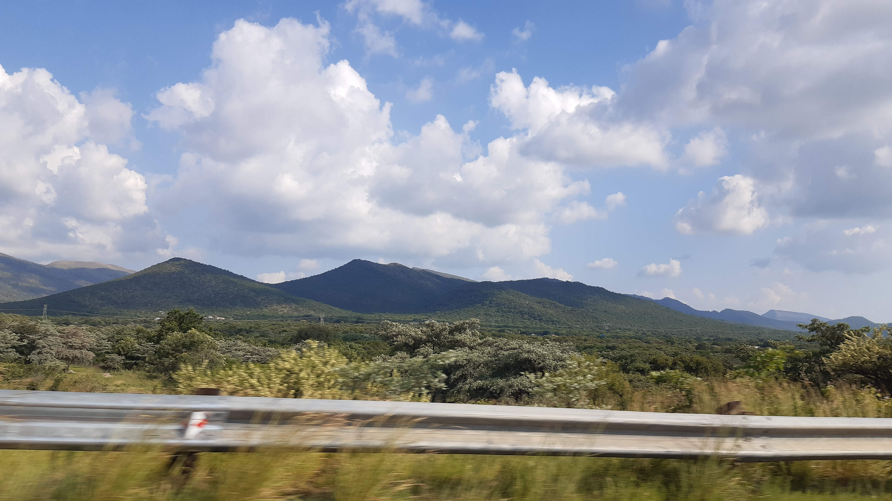
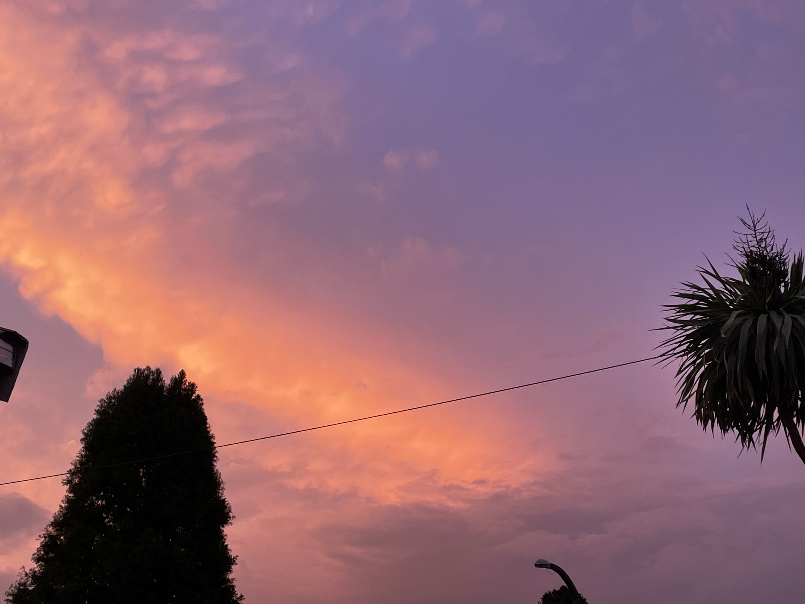
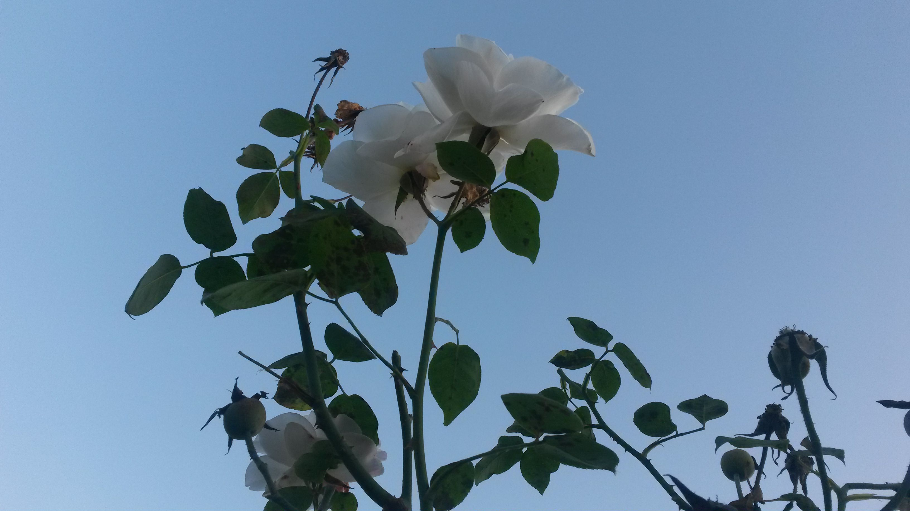
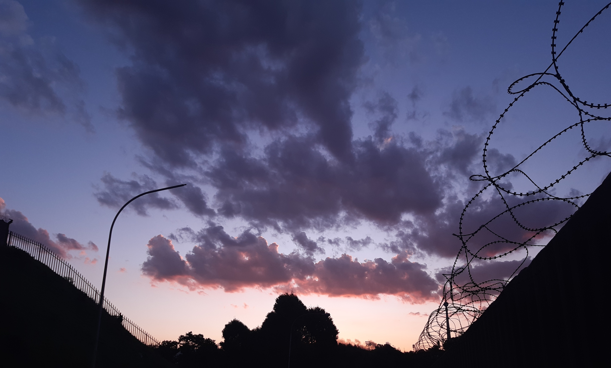
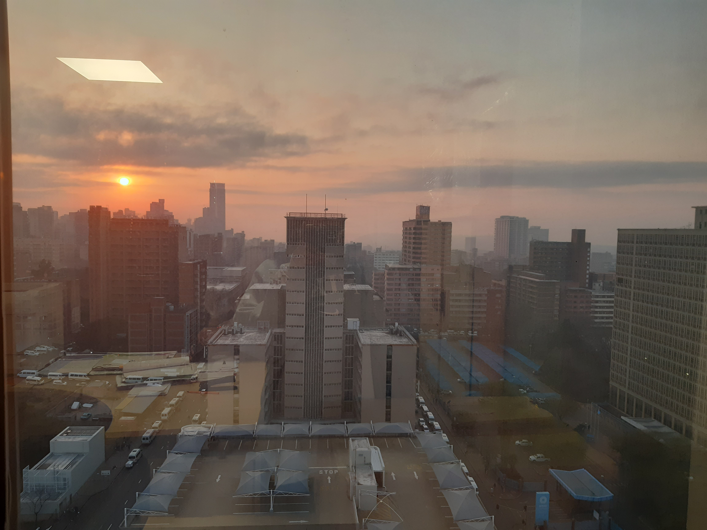
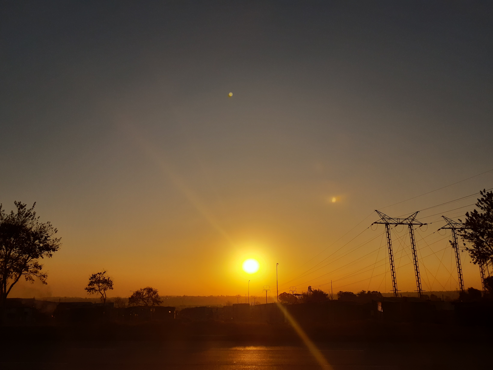

Animations
This is some of the animations i've made recently! Each slide shows a before and after process, with the last slide being a combination of animations i've just experimented and have had some fun with. Feel free to watch them! If you want to know more abouth them and their respective processes you can click the links below.
Photography
What? Animations not your thing? Maybe you'll find browsing through some photography more enjoyable. I'm not sure if you can tell, but I may have a thing for sky and sunset pictures...













About the animations
Oh! you wanted to know more about my animations? :) well, here you are!
Some flour, curious about another flower
Meet Grain! He's my little flour sack character, with a very silly personality. Everything is new to him, and he's only been a flour sack for a week now, so he's still discovering the world and engaging with the many wonders that it has to offer. Today Grain decided to take a walk in a garden and stumbled across a flower, I guess you could say they're cousins. But little did Grain know that the butterfly would give him a fright when it flies off, poor Grain :( Next time he'll know for sure that butterflies are pretty harmless, well at least lets hope so! This was animated in Krita and took about 2-3 hours to complete.
Ouch!
Well, well, well if it isn't Grain yet again! This silly flour sack is just everywhere exploring every corner of the world but he seems to be starring in a show or movie for todays adventure. I guess we should be taking opportunities the same way he does. What ever could he be doing though? Poor little guy fell out of the TV, he should watch his step sigh. This piece was animated in krita and took 1.5-2 hours to complete.
How's those new years resolutions going?
Ohh..fireworks, don't they remind you of New Years Eve? They sure remind me of New Years Eve. Remembering that makes me think about my new years resolutions :/ how are those going for you?..can't say I've been keeping up with them the way I should but alas even the slightest bit of progress is progress regardless, keep going! Fun fact, this is one of the first serious animations I've practiced. The lesson was to understand different types of timing. Animated in Krita and took about 30 minutes to complete.
Don't forget your bounce classes!
This was another animation exercise aimed towards practicing squash and stretch principles. We have two balls in this scene, a bouncy basketball named Spring and a sweet, but fiesty bowling ball named Strike. Strike is trying to practice her bounce classes, while Spring acts as her couch and mentor. She's slighlty frustrated with herself becuase no matter how much she tries she just can't bounce like Spring :( between me and you though, I don't think she'll achieve it, but lets wish her luck regardless! ^-^ Animated in Krita and took 40-50 minutes to complete.
Just a few stand alones
Oh my...you chose to read about the big guns, okay, well for starters this is a compilation of animations that don't have a final rendered version or were just done for fun and practice. We have a combination of spongebob trying to pick up a hammer, some eyes, a candle losing its flame, an obstacle course animation, a walk cycle and an animation for SMACK. While I won't go into detail about all of them, I will mention my favourite and least favourite with justifications. I'd say my favourite is the flame one, though simple, it was really fun to draw and to figure out the movement of the smoke, it also took about an hour to complete. My least favourite however, is by far the obstacle course due to how exhausting it was to draw on so many frames for the first time, 120 I believe. Another was the SMACK animation, though very simple looking, every stroke had a specific frame tied to it, and figuring out how that worked was really confusing, it took about 1.5-2 hours to complete.